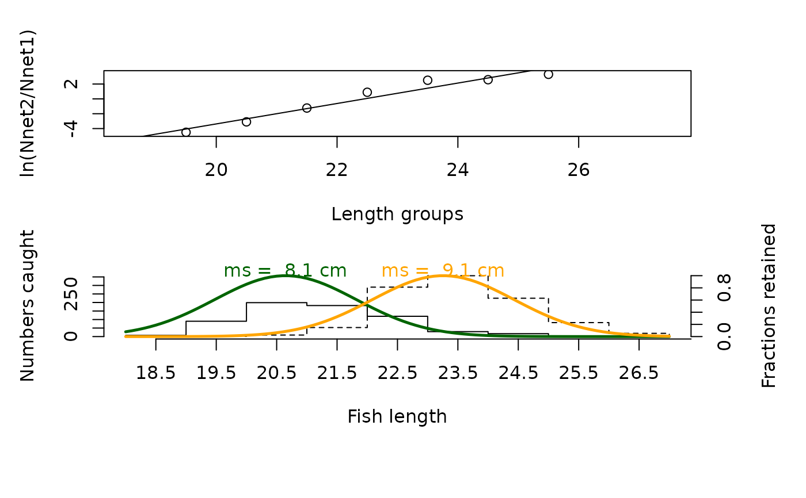

This function estimates the selecitvity of gillnets and trawl nets from experimental catches.
Arguments
- param
a list with following parameters:
typea string indicating which type of gear was used (options: "gillnet" or "trawl_net"),midLengthsmidlengths of size classesmeshSizesa vector with mesh sizes in increasing order,CatchPerNet_mata matrix with the catches per net in corresponding order of mesh sizes
- plot
logical; should the results be displayed graphically?
Value
A list with the input parameters and following list objects for type = "gillnet": #'
classes.num: numeric vector with length classes without a plus group,
SNet1: selection ogive net 1,
SNet2: selection ogive net 2,
lnNet2_Net1: logarithm ratio between nets,
linear_mod: linear model,
LmNet1: optimum length net 1,
LmNet2: optimum length net 2,
SF: selection factor,
stand.dev: standard deviation of selection factor.
and following objects for type = "trawl_net":
classes.num: numeric vector with length classes,
SLobs: observed selection ogive,
SLest: estimated selection ogive,
lnSL: logarithm of observed selection,
linear_mod: linear model,
S1: constant of selection curve,
S2: another constant of selection curve,
L25: length at which 25
L50: length at which 50
L75: length at which 75
SF: selection factor.
Details
This function estimates the fractions retained by each net, the optimum lengths for each net, the selection factor (SF), and the standard deviation of the factor (stand.dev). Calculations are based on a normal distribution with common spread. Assumptions of this method are, that (i) the optimum length Lm is proportional to the mesh size (Lm = SF * m), (ii) the selection curves are normally distributed with a common standard deviation, (iii) the nets have the same fishing power (same dimensions and material). Requirements for the experimental set-up are: selection curves corresponding to the two mesh sizes have to overlap, and the nets have to be set in the same area, during the same time. To calculate selection factor (SF), L25, L50 and L75 for trawl nets /fisheries.
References
Sparre, P., Venema, S.C., 1998. Introduction to tropical fish stock assessment. Part 1. Manual. FAO Fisheries Technical Paper, (306.1, Rev. 2). 407 p.
Examples
# Gillnet selectivity
data(tilapia)
out <- select(param = tilapia)
plot(out)

# Trawl selectivity
data(bream)
select(bream)
#> $midLengths
#> [1] 9.5 10.5 11.5 12.5 13.5 14.5 15.5 16.5 17.5 18.5
#>
#> $type
#> [1] "trawl_net"
#>
#> $meshSizes
#> [1] 0 4
#>
#> $CatchPerNet_mat
#> [,1] [,2]
#> [1,] 1 0
#> [2,] 6 1
#> [3,] 7 2
#> [4,] 4 2
#> [5,] 5 7
#> [6,] 13 30
#> [7,] 8 61
#> [8,] 3 27
#> [9,] 0 7
#> [10,] 1 4
#>
#> $classes.num
#> [1] 9.5 10.5 11.5 12.5 13.5 14.5 15.5 16.5 17.5 18.5
#>
#> $SLobs
#> [1] 0.0000000 0.1428571 0.2222222 0.3333333 0.5833333 0.6976744 0.8840580
#> [8] 0.9000000 1.0000000 0.8000000
#>
#> $SLest
#> [1] 0.06731285 0.12874277 0.23227260 0.38250594 0.55914000 0.72197316
#> [7] 0.84169152 0.91586651 0.95706006 0.97855659
#>
#> $lnSL
#> [1] NA 1.7917595 1.2527630 0.6931472 -0.3364722 -0.8362480
#> [7] -2.0314323 -2.1972246 NA NA
#>
#> $linear_mod
#>
#> Call:
#> lm(formula = lnSL ~ classes.num)
#>
#> Coefficients:
#> (Intercept) classes.num
#> 9.4364 -0.7166
#>
#>
#> $S1
#> [1] 9.436398
#>
#> $S2
#> [1] 0.7165978
#>
#> $L25
#> [1] 11.63524
#>
#> $L50
#> [1] 13.16833
#>
#> $L75
#> [1] 14.70143
#>
#> $SF
#> [1] 3.292083
#>
#> attr(,"class")
#> [1] "select"